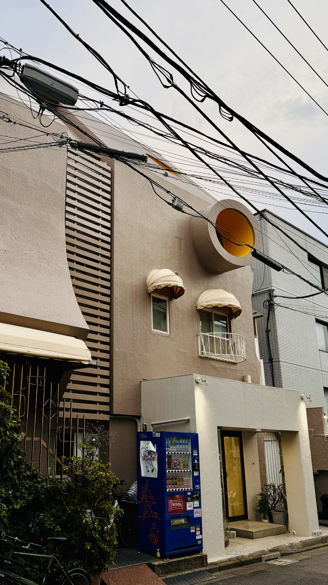
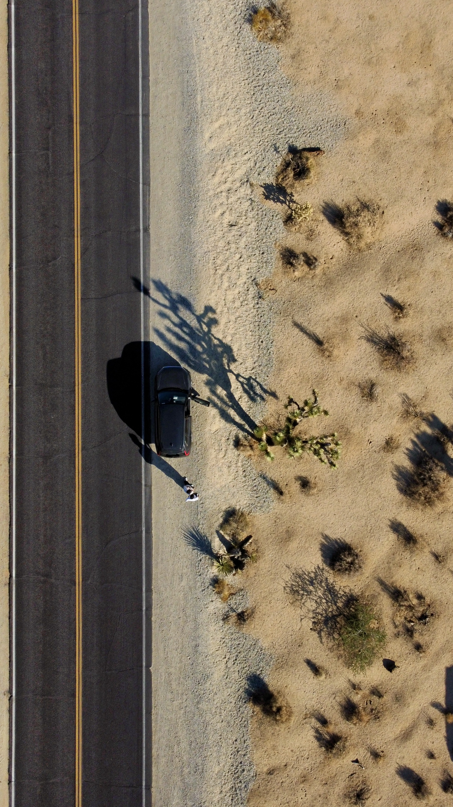
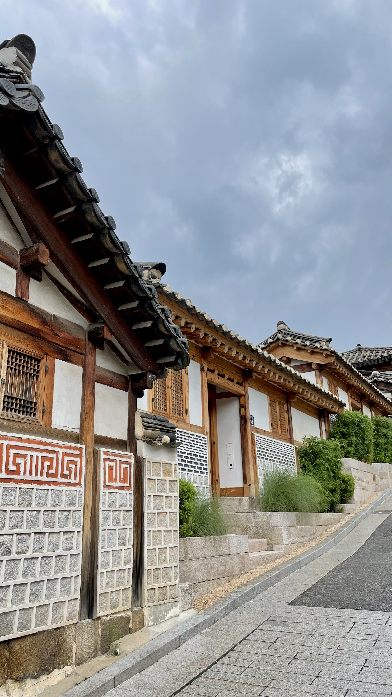

i have always loved traveling and discovering new places. most of my photos are taken with my iPhone, with occasional drone shots. they let me hold onto these experiences and revisit the little moments that make them memorable.
these are some of my favorite photos from recent travels!